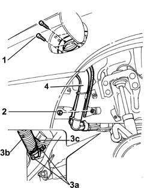

1040A30 FUEL FILLER PIPE ASSEMBLY - R&R
- Path
- Procedures > 10 ENGINE > 1040 FUEL TANK AND PIPES > 1040A FUEL TANK AND COMPONENTS > 1040A30 FUEL FILLER PIPE ASSEMBLY - R&R
- Kind
- repair procedure (removal / refitting; the operation number is the code)
- Applies to
- engines: 2.4 JTD 10V; all production periods
- Interactive page
- https://sloeber94.github.io/elrnDB-lThss/en/#/75826
Applies to: all engines; all production periods
 Removing
Removing
 Refitting
Refitting- Position the vehicle on a lift.
- Raise the vehicle.
See in Op. 4450B08 Right REAR WHEEL (one) - R.R.
See in Op. 7055B43 REAR WHEEL ARCH LINER (one), left or right - R.R.
1. Undo the bolts fixing the fuel filler to the bodyshell.
2. Undo the nut fixing the filler pipe to the bodyshell.
- Break the plastic bands and release the electrical wiring secured to the filler pipe.
3. Open the bands (3a) and disconnect the flexible section of the fuel filler pipe (3b) and the reflux pipe (3c) from the tank.
4. Remove the fuel filler pipe assembly.

Applies to: all engines; all production periods
Refitting
Removing- Position the fuel filler pipe.
- Connect the flexible section of the fuel filler pipe and the reflux pipe using new bands.
- Tighten the nut fixing the filler pipe to the bodyshell.
- Tighten the bolts fixing the fuel filler to the bodyshell.
- Renew the fastening for the electrical wiring on the filler pipe using new plastic bands.
See in Op. 7055B43 REAR WHEEL ARCH LINER (one), left or right - R.R.
See in Op. 4450B08 Right REAR WHEEL (one) - R.R.
- Lower the vehicle.
- Remove the vehicle from the lift.